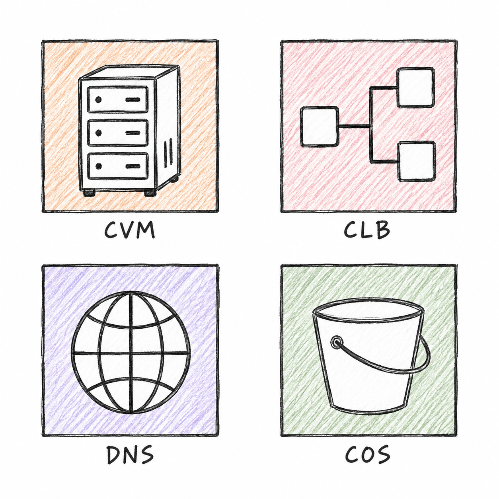

CVM / CLB / DNS / COSPencil infrastructure icons
Square frames, colored pencil hatching, simple ink contours. Ungroup to edit individual strokes.
Editable vector adaptation of the approved sketch. Paper grain is simplified; lettering uses Excalidraw's handwriting font.
Approved style reference
